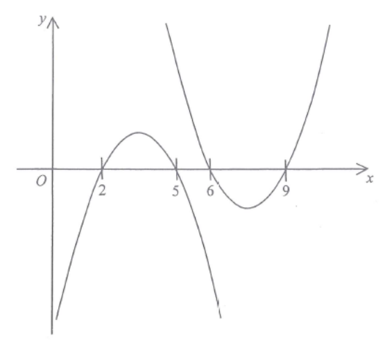

函數與圖像 · 圖像變換

開口向上 $\Rightarrow k>0$。
另一條曲線開口向下、零點在 $2$ 及 $5$，所以它的形式應為 $y=-m(x-2)(x-5)$，$m>0$。
$$f(x+4)=k(x+4-6)(x+4-9)=k(x-2)(x-5)$$
再加負號：
$$-f(x+4)=-k(x-2)(x-5),\qquad k>0$$
零點為 $2$、$5$，開口向下，與圖中曲線完全吻合。
A：$-3f(x)$ 零點仍是 $6$、$9$，不符。
B：$f(-x+11)=k(5-x)(2-x)=k(x-2)(x-5)$，零點雖然相同，但 $k>0$ 令它開口向上，不符。
D：$f(x+4)$ 零點 $2$、$5$，但開口向上，不符。